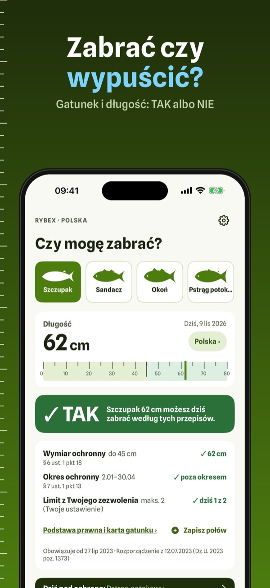
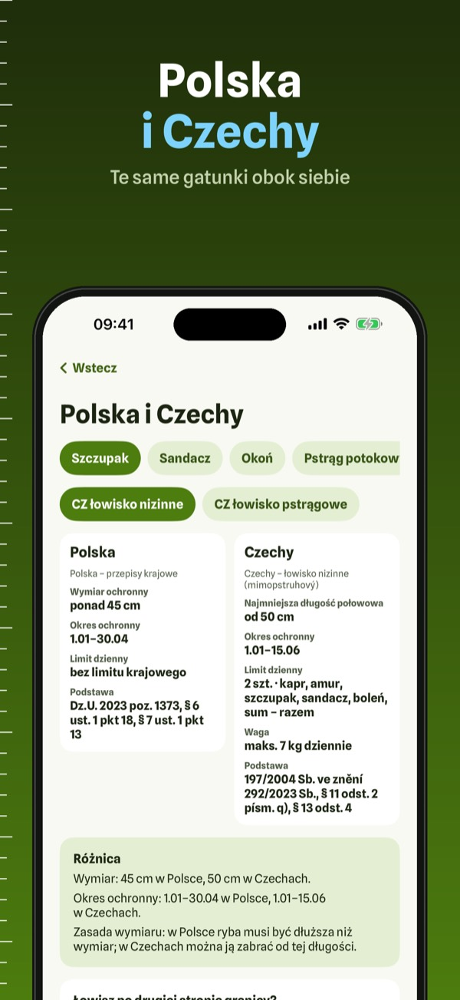
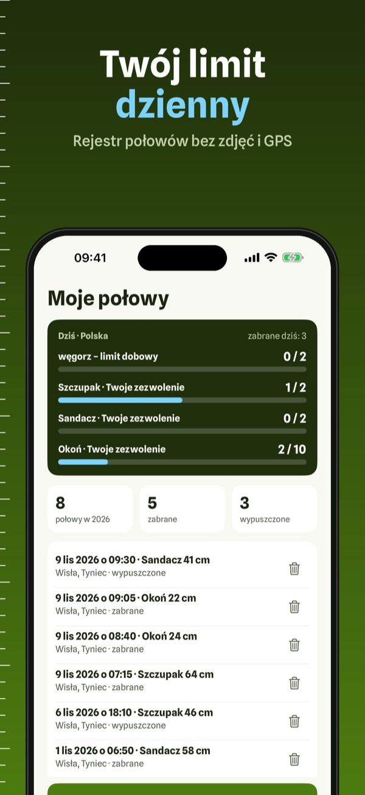
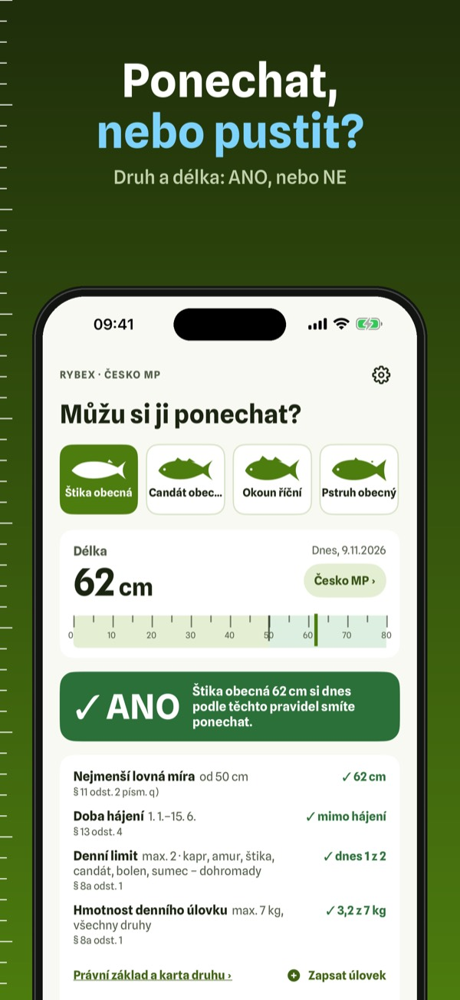
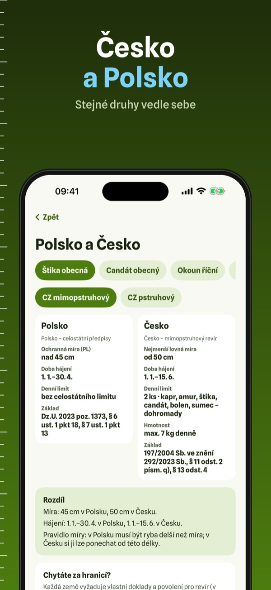
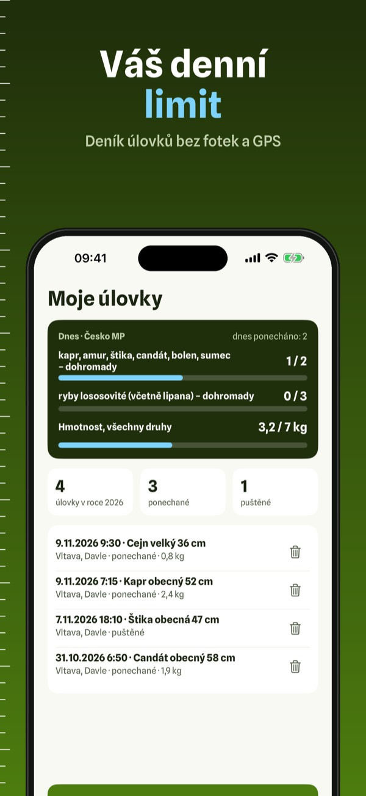

Wymiar i okres ochronny ryb
Złowiona ryba: zabrać czy wypuścić? Wybierz gatunek, wpisz długość i zobacz wymiar, okres ochronny i limit dzienny według przepisów krajowych. Bez internetu.



Masz rybę na brzegu i nie wiesz, czy możesz ją zabrać? Rybex odpowiada w kilka sekund: wybierz gatunek, wpisz długość, a zobaczysz TAK albo NIE według przepisów krajowych: wymiar ochronny, okres ochronny, limit dzienny, podstawę prawną i datę, od której obowiązuje. Wszystko działa nad wodą bez zasięgu.
Szybkie sprawdzanie, jeden zestaw przepisów i 10 gatunków działają bez zakupu. Rybex Plus to zakup jednorazowy: Polska i oba rodzaje czeskich łowisk, wszystkie 20 gatunków, rejestr połowów z licznikiem limitu i przypomnienia. Bez subskrypcji.
Rybex streszcza przepisy krajowe własnymi słowami i nie jest dokumentem urzędowym. Nie jest aplikacją związku wędkarskiego ani urzędu. Regulamin okręgu lub łowiska może być surowszy; wiążące są aktualne przepisy, regulamin i Twoje zezwolenie.
Terms of Use (EULA): https://www.apple.com/legal/internet-services/itunes/dev/stdeula/
Privacy: https://baytechbv.github.io/privacy/rybex-eu/
Můžu si rybu ponechat?
Chycená ryba: ponechat, nebo pustit? Vyberte druh, zadejte délku a uvidíte lovnou míru, dobu hájení a denní limit podle celostátních předpisů. Bez internetu.



Máte rybu na břehu a nevíte, jestli si ji smíte ponechat? Rybex odpoví během pár vteřin: vyberte druh, zadejte délku a uvidíte ANO, nebo NE podle celostátních předpisů: nejmenší lovnou míru, dobu hájení, denní limit, právní základ a datum, od kterého platí. Vše funguje u vody i bez signálu.
Rychlé ověření, jedna sada pravidel a 10 druhů fungují bez nákupu. Rybex Plus je jednorázový nákup: oba druhy českých revírů i Polsko, všech 20 druhů, deník úlovků s počítadlem limitu a připomínky. Bez předplatného.
Rybex shrnuje celostátní předpisy vlastními slovy a není úředním dokumentem. Nepatří k žádnému rybářskému svazu ani úřadu. Podmínky svazu nebo revíru mohou být přísnější; závazné jsou platné předpisy, podmínky revíru a vaše povolenka.
Terms of Use (EULA): https://www.apple.com/legal/internet-services/itunes/dev/stdeula/
Privacy: https://baytechbv.github.io/privacy/rybex-eu/